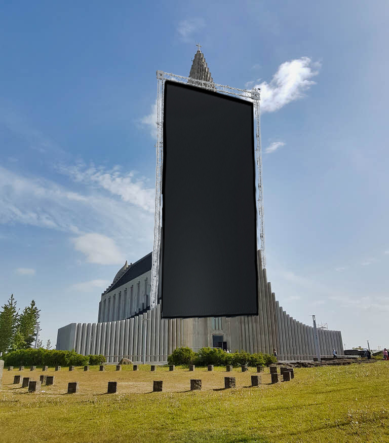

Allar undankeppnir verað haldnar í Laugardalshöllinni en verður líka streymt á Twitch.tv og YouTube.
Til að fá eins litla truflun og hægt er verður ekki selt miða á lokakeppnina heldur verður streymt keppninni á Twitch.tv, YouTube, og skjá sem settur verður á Hallgrímskirkju með hátalara sem heyrist í alla leiðina að Kringlunni. Keppendur verða allir settir á sitt hvora staði úti á landi sem enginn veit hvar eru, ekki einu sinni aðrir keppendur! Þetta er gert svo enginn geti truflað þá á meðan þeir spila Bloons.
